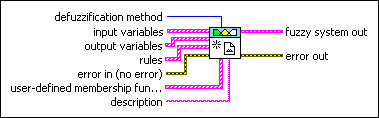
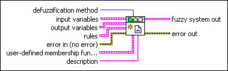

FL New Fuzzy System VI
Owning Palette: Fuzzy Logic VIs
Requires: Full Development System
Creates a fuzzy system. You also can use the Fuzzy System Designer to create fuzzy systems interactively.

 Add to the block diagram Add to the block diagram |
 Find on the palette Find on the palette |
Owning Palette: Fuzzy Logic VIs
Requires: Full Development System
Creates a fuzzy system. You also can use the Fuzzy System Designer to create fuzzy systems interactively.

| Add to the block diagram |
Find on the palette |
 |
defuzzification method specifies the defuzzification method this VI uses to convert the degrees of membership of output linguistic variables into numerical values.
|
||||||||||
 |
input variables specifies the input linguistic variables for the fuzzy system. | ||||||||||
|
output variables specifies the output linguistic variables for the fuzzy system. | ||||||||||
|
rules specifies the rules for the fuzzy system. Use the input variables and output variables to form the antecedents and consequents, respectively, of the rules. | ||||||||||
 |
error in describes error conditions that occur before this node runs. This input provides standard error in functionality. | ||||||||||
|
user-defined membership function shapes specifies the x-y values of points that define custom shapes for membership functions. The shape of a membership function determines the degrees of membership for a linguistic variable within the corresponding linguistic term. When you use the FL Create Membership Function VI to create a new membership function, you can use predefined membership function shapes, or you can use a custom membership function shape that you specify with this parameter. For each custom membership function shape you define, you can use any range of x-values. However, the range of the y-values must be between 0 and 1 such that the first point you specify has a degree of membership of 0 and the last point you specify has a degree of membership of 1. LabVIEW scales the custom shape linearly between the left base and left top points and scales the mirror image of this shape linearly between the right top and right base points. Any points between left top and right top have a degree of membership of 1. | ||||||||||
 |
description specifies a description for the fuzzy system. | ||||||||||
 |
fuzzy system out returns the complete information for a fuzzy system. Wire this output to the fuzzy system in input of another VI. | ||||||||||
 |
error out contains error information. This output provides standard error out functionality. |